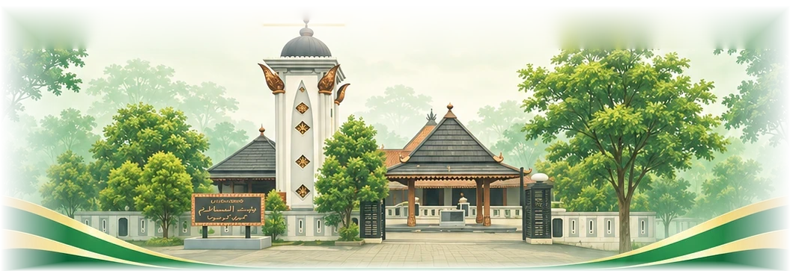

Donasi Aghniya (Umum)
Rp 0Donasi dana umum / aghniya TRANSPARANSI & KEBERSAMAAN
Website Informasi Hasil Donasi
Simaatul Qur'an Girikesumo 2027
Bersama Al-Qur'an, menguatkan ukhuwah. Pantau amanah dan partisipasi masyarakat dengan terbuka.

LAPORAN DONASI
Ringkasan Perolehan
Rekap donasi yang telah diverifikasi oleh panitia.
Donasi Air Mineral
0 DusJumlah dus terverifikasiDonasi Warga per RT
Rp 00 RT berpartisipasi dari 6 RWPARTISIPASI 6 RW DESA BANYUMENENG
Donasi Warga per RW dan RT
Rekap kontribusi uang warga per RT, dikelompokkan berdasarkan RW 01 sampai RW 06. RT mengikuti data asli panitia.
TERBUKA & TERDATA
Riwayat Donasi
Telusuri donasi aghniya, air mineral, dan warga berdasarkan RW/RT.
| Tanggal | Donatur | RW / RT | Kategori | Jumlah |
|---|---|---|---|---|
| Memuat data… | ||||
0 transaksi
1 / 1
TENTANG KEGIATAN
Amanah yang Dijaga Bersama
Simaatul Qur'an Girikesumo 2027 diselenggarakan pada Ahad Kliwon, 3 Januari 2027 di Masjid Jami' Baitussalam Girikesumo, Desa Banyumeneng, Kecamatan Mranggen, Kabupaten Demak.
Website ini menjadi sarana informasi perkembangan tiga jenis donasi: Aghniya (umum), Air Mineral, serta Donasi Warga dari setiap RT di enam RW Desa Banyumeneng. Hanya donasi yang sudah diverifikasi panitia yang ditampilkan sebagai laporan resmi.